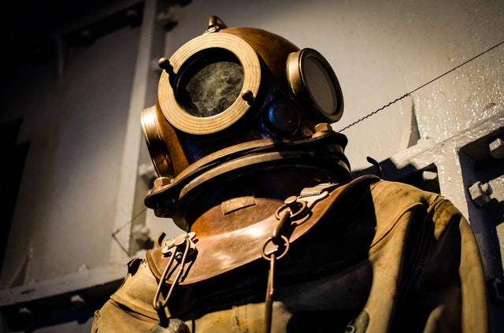
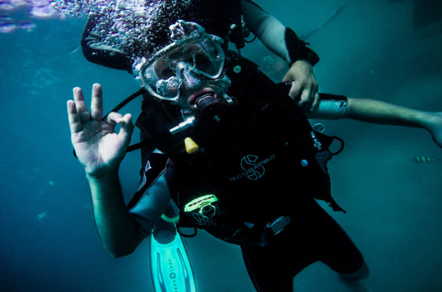

Scuba Diving Methodology
by: Bill Jason
Introduction:
My name is Bill Jason I'am a college student currently in City College of San Francisco (CCSF) from San Francisco,CA and my hobby is Scuba Diving. I've been scuba diving for 5 years and currenly have a "Open water PADI certification". Scuba diving is considered one if the best recreational activities known world wide. You can do Scuba diving for fun activities or professionally in relations to scientific research, public safety, and military. The reason why I'am doing scuba diving is because I love being in the ocean and enjoy thrills that is challenges. Scuba Diving helps me explore a new world under the ocean. Looking or Observing reefs, and different types of sea creature make you curious about their livelihood and the environment around them.
First thing you should understand when it comes to learning how to be a Scuba Diver is it's for everybody from age 10 and up . Go to a professional scuba diving school and apply for a PADI certification course. Understanding diving gears, safety, certification courses and tips as a beginner. There are three phases to start scuba diving, first is the classroom lecture combined with physics and physiology of scuba diving; then you will be staring to learn scuba diving in a confined water training location (training pool). The last part of the phase to you will be conducting your open water training in the ocean that is below 25-35 feet deep. The reason why I enjoy scuba diving is because learning scuba diving helps me learn somthing about scuba diving and how your body reacts to the oxgyen, nitrogen and carbon dioxide when going underwater. The more you understand about scuba diving the more well rounded you are in this type of recreation to acquire more certificates.

There are so many resources about Scuba Diving that you can learn from you local library has some books related to diving. While we are currently living in the age of the internet. Well known free source of data information would be youtube if you are more of a visual person any what to see learn to learn scuba diving in your own computer. If you want to get certified I would likely recommend to go to the website padi.com. PADI is a professional scuba diving corporation that provides beginner to advance divers a range of progressive training that introduce skills, safety-related information and local environmental knowledge to student divers in stages. Padi will provide a list of scuba diving schools that is accredited into the PADI standards of education.
Below are a list of resources that can help you start your fun activitiy in Scuba Diving.